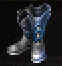

법사 장비 정보
1차·2차·3차 장비를 확인하세요. 아이템을 선택하면 이미지와 옵션 등록 공간이 펼쳐집니다.
1차 장비
무기
제로스의 지팡이

공격력 (작은/큰 몬스터) 16 / 16
추가 옵션 근거리 명중+8, 근거리 대미지+3, INT+1, SP+5, 마법 발동: 크리티컬 선 버스트
안전 인챈트 +6까지 안전하게 가능
클래스 마법사
설명 공격 시 일정 확률로 크리티컬 선 버스트가 발동. 인챈트 +1 당 발동 확률이 +1% 증가
방어구
신성한 마법방어의 투구
옵션 정보 등록 예정
멸마의 로브
옵션 정보 등록 예정
수호성의 파워글로브
옵션 정보 등록 예정
지식의 부츠

옵션 AC-3, INT+1
클래스 군주, 기사, 요정, 마법사, 다크엘프
인챈트 +4까지 안전하게 가능
설명 인챈트+1 당 AC-1 식 증가, +9에 대미지 감소+1, +7부터 인챈트+1 당 최대 HP+20씩 증가하여 +10까지 HP+80
거대여왕개미 은빛날개
옵션 정보 등록 예정
지식의 티셔츠
옵션 정보 등록 예정
마법사의 가더
옵션 정보 등록 예정
악세서리
수령의 귀걸이
옵션 정보 등록 예정
신성한 지식의 반지
옵션 정보 등록 예정
신성한 지식의 벨트
옵션 정보 등록 예정
신성한 지식의 목걸이
옵션 정보 등록 예정
2차 장비
무기
파푸리온의 지팡이

공격력 (작은/큰 몬스터) 19 / 21
추가 옵션 공격성공률 +9, 추가타격치 +10, INT+3, SP +5, 마나 흡수
안전 인챈트 +6까지 안전하게 가능
방어구
대마법사의 모자
옵션 정보 등록 예정
각종 용갑 (마력)
옵션 정보 등록 예정
대마법사의 장갑
옵션 정보 등록 예정
뱀파이어의 부츠
옵션 정보 등록 예정
뱀파이어의 망토
옵션 정보 등록 예정
수룡의 티셔츠
옵션 정보 등록 예정
수령의 가더
옵션 정보 등록 예정
악세서리
룸티스 귀걸이

옵션 AC-1
인챈트 -
설명 룸티스 계열 귀걸이입니다.

옵션 AC-1 / 최대 MP+5
인챈트 -
설명 룸티스 계열 귀걸이입니다.

옵션 AC-1 / 최대 HP+10
인챈트 -
설명 룸티스 계열 귀걸이입니다.
스냅퍼 반지

옵션 AC-1 / 근거리 명중+1 / 근거리 대미지+1
인챈트 -
설명 스냅퍼 계열 반지입니다.

옵션 AC-1 / 최대 HP+50
인챈트 -
설명 스냅퍼 계열 반지입니다.

옵션 AC-1 / 최대 MP+15
인챈트 -
설명 스냅퍼 계열 반지입니다.

옵션 AC-1 / MR+5
인챈트 -
설명 스냅퍼 계열 반지입니다.
리치의 벨트
옵션 정보 등록 예정
현자의 목걸이
옵션 정보 등록 예정
3차 장비
무기
수정결정체 지팡이

공격력 (작은/큰 몬스터) 23 / 21
추가 옵션 INT+2, SP+8, 근거리 명중+13, 근거리 대미지+4, 마법 적중+4
안전 인챈트 -
방어구
조우의 투구
옵션 정보 등록 예정
조우의 로브
옵션 정보 등록 예정
조우의 장갑
옵션 정보 등록 예정
조우의 부츠
옵션 정보 등록 예정
조우의 망토
옵션 정보 등록 예정
실프의 티셔츠
옵션 정보 등록 예정
리치의 가더
옵션 정보 등록 예정
악세서리
3차 악세서리 목록은 아직 제공되지 않았습니다.